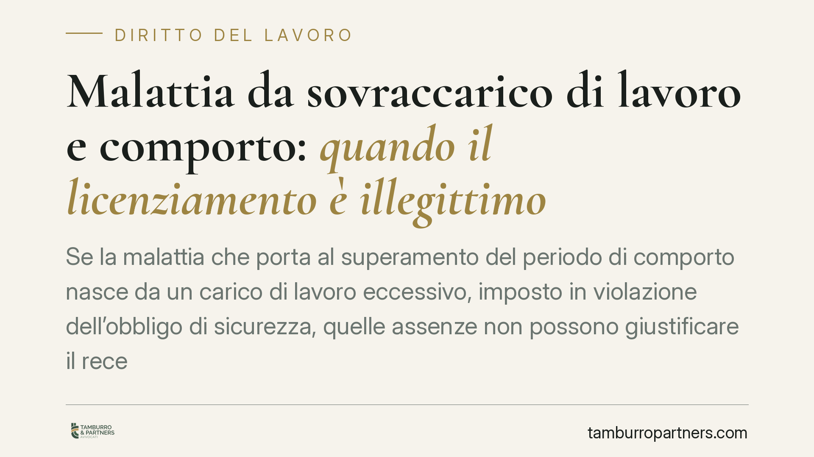

Malattia da sovraccarico di lavoro e comporto: quando il licenziamento è illegittimo
Se la malattia che porta al superamento del periodo di comporto nasce da un carico di lavoro eccessivo, imposto in violazione dell'obbligo di sicurezza, quelle assenze non possono giustificare il recesso. Il principio, consolidato in giurisprudenza intorno all'art. 2087 c.c., riguarda anche i lavoratori con funzioni direttive esclusi dai limiti ordinari d'orario. Vediamo perché conta e come si prova.

Il fatto
Un responsabile con funzioni direttive di un punto vendita della grande distribuzione viene licenziato per superamento del periodo di comporto, ossia il limite massimo di assenze per malattia oltre il quale il datore può recedere dal contratto. La difesa del lavoratore sostiene che le assenze derivavano da una patologia causata dai ritmi e dai volumi di lavoro imposti dall'azienda, in violazione dell'obbligo di protezione dell'integrità psicofisica.
La questione tocca un nodo ricorrente nel contenzioso del lavoro: le assenze provocate da una condotta datoriale illegittima possono essere conteggiate ai fini del comporto?
Inquadramento normativo
Il riferimento centrale è l'art. 2087 del codice civile, che impone al datore di adottare le misure necessarie a tutelare l'integrità fisica e la personalità morale dei lavoratori. Si tratta di un obbligo di protezione ampio: non riguarda soltanto la sicurezza delle attrezzature o dell'ambiente, ma comprende anche l'organizzazione dei ritmi, dei carichi e dei volumi di lavoro. Un'organizzazione che espone il dipendente a uno stress patologico può integrare la violazione di questo obbligo.
Da qui il principio: le assenze per malattia riconducibili a una condotta datoriale contraria all'art. 2087 c.c. non possono essere computate nel periodo di comporto. Diversamente, il datore trarrebbe vantaggio dalla propria inadempienza, licenziando per assenze che egli stesso ha contribuito a determinare.
Un chiarimento terminologico è doveroso. La categoria del dirigente (soggetto con ampia autonomia e poteri di rappresentanza) va tenuta distinta dal quadro direttivo e dal lavoratore con funzioni direttive ai sensi dell'art. 17, comma 5, del D.Lgs. 66/2003, che riguarda l'esclusione dalla disciplina ordinaria sull'orario di lavoro. Queste figure non coincidono, e il caso in esame riguarda un lavoratore con funzioni direttive, non necessariamente un dirigente in senso stretto.
Sul punto è essenziale un ulteriore rilievo: l'esclusione dai limiti massimi di orario prevista dall'art. 17 D.Lgs. 66/2003 non elimina l'obbligo di sicurezza. Chi è sottratto ai vincoli ordinari sull'orario resta comunque tutelato dall'art. 2087 c.c.: l'assenza di un tetto formale alle ore lavorate non autorizza carichi tali da compromettere la salute.
Implicazioni pratiche
Per il lavoratore che si vede contestato il superamento del comporto, la difesa non si limita a contestare il calcolo delle giornate. Occorre dimostrare il nesso causale tra la malattia e l'organizzazione del lavoro: che le assenze derivano da una patologia provocata proprio da quei carichi eccessivi.
Attenzione, però, all'onere probatorio. Il nesso non si presume: va provato. Spetta al lavoratore allegare e dimostrare che la condotta datoriale è stata concretamente lesiva e che ha determinato la malattia. Non basta lamentare genericamente lo stress; servono elementi oggettivi e coerenti.
Sul piano delle conseguenze del licenziamento illegittimo, il regime sanzionatorio non è unico. Per i lavoratori assunti prima del 7 marzo 2015 può trovare applicazione la tutela dell'art. 18 dello Statuto dei lavoratori (L. 300/1970), come riformato nel 2012. Per gli assunti dal 7 marzo 2015 si applica invece il regime del contratto a tutele crescenti (D.Lgs. 23/2015), a carattere prevalentemente indennitario. La distinzione temporale è decisiva e va verificata caso per caso.
Cosa fare in concreto
- Documenta i carichi di lavoro. Conserva turni, comunicazioni aziendali, richieste di reperibilità, orari effettivi e ogni prova dei volumi realmente sostenuti.
- Formalizza tempestivamente le criticità. Segnalazioni scritte al datore sui carichi eccessivi, prima dell'insorgere della patologia, hanno un peso probatorio rilevante.
- Cura la documentazione medica. Certificati, diagnosi e, ove possibile, riferimenti clinici al nesso tra la patologia e le condizioni lavorative.
- Verifica la data di assunzione. Da essa dipende il regime sanzionatorio applicabile in caso di illegittimità del recesso.
- Impugna nei termini. Il licenziamento va contestato entro sessanta giorni dalla ricezione, con successivo deposito del ricorso nei termini di legge.
È opportuno valutare la propria posizione con anticipo rispetto a un eventuale recesso: la ricostruzione del nesso tra malattia e organizzazione del lavoro si fonda su elementi che è più agevole reperire quando il rapporto è ancora in corso.
---
*Contributo informativo a cura di Tamburro & Partners - Avv. Giuseppe Tamburro. Non costituisce parere legale.*
Ogni storia di lavoro ha i suoi tempi.
Se gestisci HR e vuoi un confronto su contenzioso, ispezioni o licenziamenti, scrivi allo studio. Ti rispondiamo entro un giorno lavorativo.